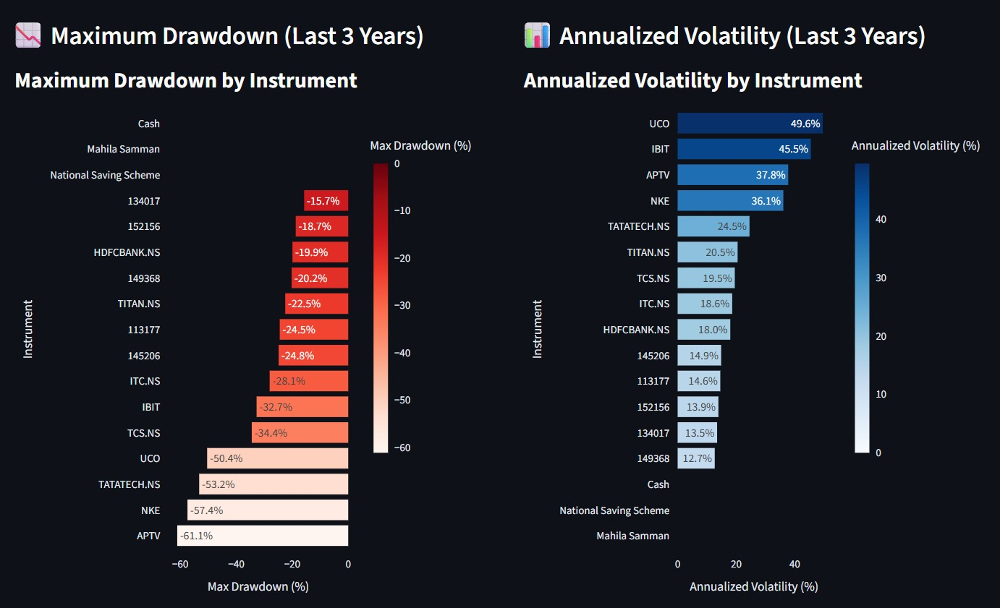
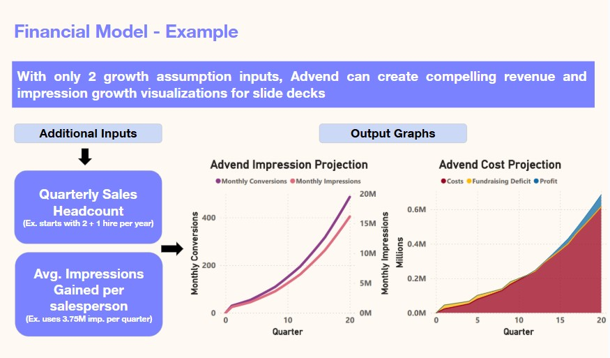
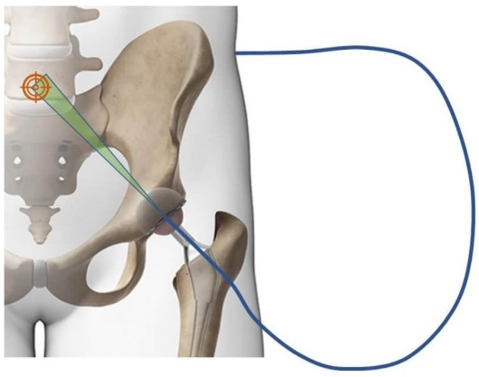
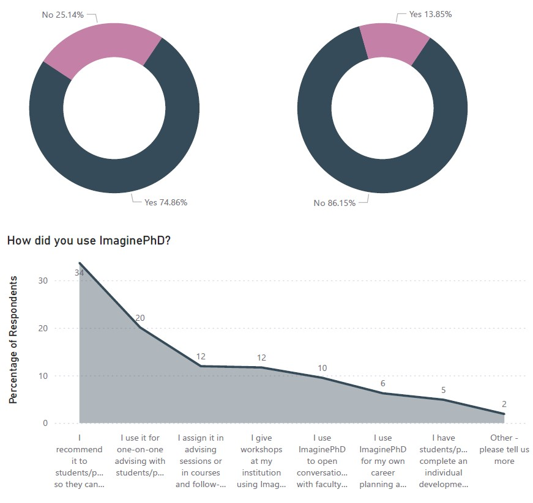

Personal Project

Personal finance tracking dashboard with analytics
Aug 2021 - May 2023
Jan 2024 - May 2024

Market segmentation and financial modeling analysis
Jan 2024 - May 2024

FDA regulatory pathway and market analysis
Apr 2024 - Jul 2024

User engagement analysis and insights dashboard